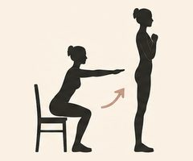
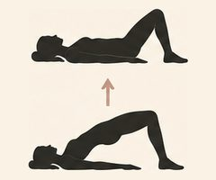
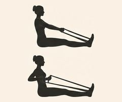
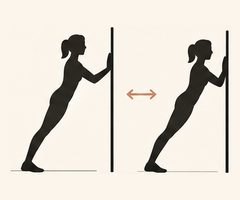
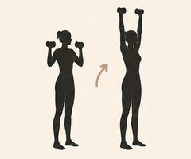

En enkel plan inspirert av Stacy Sims, med hovedvekt på styrke, korte intervaller, hverdagsaktivitet og nok restitusjon. Passer i årene før, under og etter overgangsalderen.
Uka i korte trekk
MandagStyrke 45–60 min StyrkeHele kroppen, relativt tungt
TirsdagRolig aktivitet Rolig30–60 min gåtur
OnsdagKorte intervaller Intervall20–30 min totalt
TorsdagHvile RoligYoga, mobilitet eller rolig gåtur
FredagStyrke 45–60 min StyrkeHele kroppen
LørdagTur LystTur, fjelltur eller annen aktivitet du liker
SøndagHvile RoligHvile eller lett aktivitet
Styrkeøktene
Tanken er ikke å gjøre mange øvelser, men å gjøre noen grunnbevegelser ordentlig. Det kan du gjøre både på treningssenter og hjemme.
Oppvarming, 5–10 min: litt rolig kondisjon (sykkel, rask gange eller trapp), og deretter et lett oppvarmingssett av de første øvelsene før du tar i.

Knebøy eller beinpress3 × 6–8

Rumensk markløft eller annen hofteøvelse3 × 6–8

Roing eller nedtrekk3 × 6–8

Brystpress eller push-ups3 × 6–8

Skulderpress2–3 × 6–8
Enbensøvelse, for eksempel utfall eller step-up2 × 6–8 per bein
Avslutt gjerne med litt mage- og kjernestyrke.
Utstyr som holder lenge: et par manualer eller en kettlebell (gjerne justerbare manualer, så du kan øke vekten), et par treningsstrikk med ulik motstand, en stødig stol og en trapp. Har du ikke vekter ennå, fungerer en ryggsekk med bøker eller vannflasker.
Knebøy med manual eller kettlebellHold vekten foran brystet (goblet-knebøy). For mer: bulgarsk utfall med bakre fot på en stol.3 × 6–8
Rumensk markløft med manualerEller seteløft med skuldrene mot sofaen og vekt på hoftene. For mer: markløft på ett bein.3 × 6–8
Roing med manual eller strikkÉn arm av gangen med støtte på en stol, eller strikk festet i døra.3 × 6–8
Push-upsMot kjøkkenbenken, så på knærne, så på gulvet. Eller brystpress med manualer liggende på gulvet.3 × 6–8
Skulderpress med manualer eller strikkSittende eller stående.2–3 × 6–8
Step-up eller utfall bakoverPå et trappetrinn eller en stødig stol, gjerne med manualer i hendene.2 × 6–8 per bein
Avslutt gjerne med litt mage- og kjernestyrke, for eksempel dead bug, bird dog eller planke.
Når vektene blir for lette
Hjemme er utfordringen ofte at du ikke har tunge nok vekter. Du kan fortsatt gjøre øvelsene tunge nok:
Bytt til ett bein eller én arm. Da blir samme vekt nesten dobbelt så tung.
Senk sakte. Bruk 3 sekunder på vei ned, og hold en kort pause i bunnen.
Ta flere repetisjoner i mellomtiden. Klarer du mer enn 8 med vektene du har, virker det fortsatt å gå opp mot 12–15 repetisjoner, så lenge de siste kjennes virkelig tunge. Målet er likevel å komme dit at 6–8 repetisjoner er det du klarer.
Kjøp neste vekt. Når alt dette blir lett, er det tid for tyngre manualer.
Hvor tungt?
Stacy Sims anbefaler å løfte tungt: vekten skal være så tung at 6–8 repetisjoner er det du klarer. Siste repetisjonene i hvert sett skal kjennes tunge, men teknikken skal holde. En god tommelfingerregel er at du kunne klart 1–2 repetisjoner til. Hvil gjerne 1,5–2 minutter mellom settene, så du orker å løfte ordentlig i neste sett.
Slik øker du
Når du klarer øvre del av repetisjonsområdet med god teknikk, øker du vekten litt. Det er dette som gjør at kroppen fortsatt får et signal om å bevare og bygge muskelmasse.
Ny med styrketrening?
Begynn med lettere vekter (eller bare kroppsvekten hjemme), 2 sett og 10–12 repetisjoner de første ukene, og bruk tiden på å lære teknikken. Når bevegelsene sitter, øker du vekten gradvis til du er nede på 6–8 tunge repetisjoner.
Intervalløkten
Her er det lurt å begynne litt mer moderat enn mange av Sims’ «sprint»-økter. Gå, sykle, gå i motbakke, ro eller svøm, det du liker og tåler.
Oppvarming: 10 min rolig.
Start her
4 × 3 minutter ganske hardt, med 2 minutter rolig aktivitet mellom hvert drag. Omtrent 7 av 10 på en anstrengelsesskala: du kan si noen få ord, men ikke føre en samtale.
Når kroppen er vant til høyere intensitet
6–8 × 30 sekunder hardt, med 60–90 sekunder rolig mellom. Nå er det mer som 8–9 av 10.
Avslutt med 5 minutter rolig nedtrapping.
Du trenger ikke kjøre deg helt tom. Målet er et tydelig intensivt stimulus, ikke maksimal utmattelse.
Det viktigste prinsippet
For kvinner rundt overgangsalderen er det bedre å tenke:
2 gode styrkeøkter + 1 intensiv økt + mye vanlig bevegelse
enn:
5–6 middels harde treningsøkter hver uke
Det siste kan lett bli mye «gråsone-trening»: hardt nok til å koste restitusjon, men ikke hardt nok til å gi samme stimulus som ordentlig styrke eller intervaller.
Travel uke? På uker der livet ellers krever mye, kan du redusere til to styrkeøkter og gåturer. Det er fortsatt en veldig god treningsuke.
Maten rundt treningen
Ikke kombiner med streng slanking. Denne typen trening passer dårlig sammen med aggressiv kalorirestriksjon.
Protein til hvert hovedmåltid. For en aktiv kvinne 40+ er et praktisk mål ofte omtrent 25–35 g protein per hovedmåltid, slik at proteinet fordeles utover dagen. Et måltid med protein innen et par timer etter styrkeøkta er også lurt.
Litt mat før hard trening. Du trenger ikke et stort måltid, men hvis du blir tom, svak eller veldig sulten etterpå, er litt mat før trening bedre enn å insistere på å trene fastende.
Restitusjon er en del av programmet
Søvn og restitusjon er ikke noe som kommer i tillegg. Det er der kroppen faktisk bygger seg opp etter øktene.
Kjenner du deg fortsatt sliten, sover dårlig eller har lav energi flere dager på rad, er det et signal om å ta ned intensiteten en uke, ikke å presse på.
Viktige forholdsregler
Ingen øvelser skal gjøre vondt i ledd. Gjør bevegelsen mindre, velg en annen variant, eller hopp over øvelsen hvis noe kjennes feil.
Har du hjerte- eller karsykdom, høyt blodtrykk eller andre helseplager, snakk med legen din før du begynner med tung styrke eller harde intervaller.
Stopp og ta kontakt med lege hvis du får brystsmerter, uvanlig tungpust eller blir svimmel.